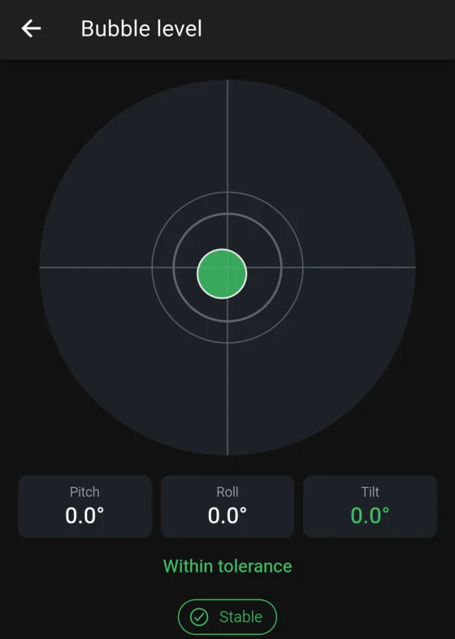
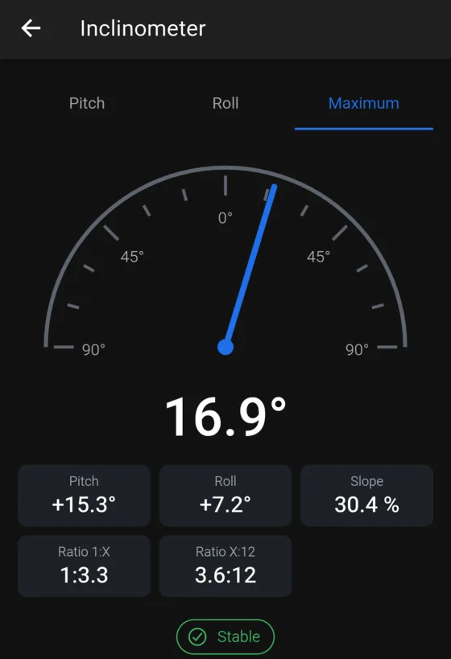
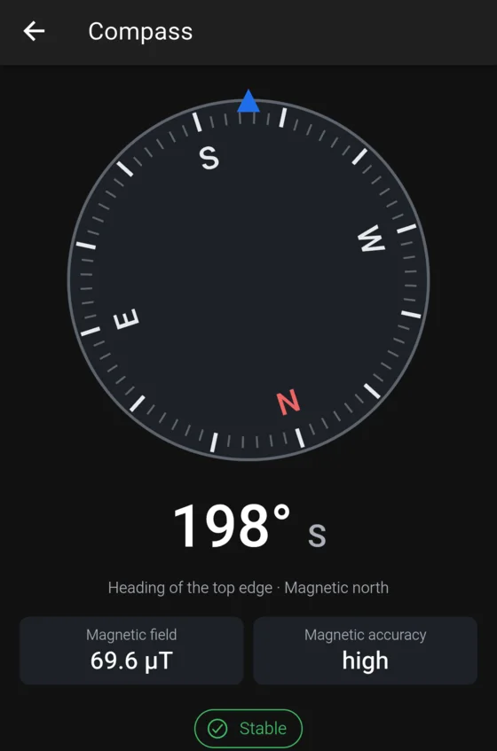

A level, inclinometer, plumb and compass in your pocket.
LevelScope turns your Android phone into a set of measuring tools, and keeps a record of what you measure. It works fully offline, with no account and no ads.

Six tools
Everything you need to check an angle
Each tool reads the phone’s motion sensors, smooths the reading and tells you when it is stable.
Bubble level
Level a surface on two axes with the phone lying flat.
Bar level
Stand the phone on any of its four edges and level along a line.
Inclinometer
Read an angle in degrees, percent slope, or as a 1:X or X:12 ratio.
Plumb
Check that a wall, post or frame is vertical.
Compass
Magnetic heading and cardinal point, with a warning when something interferes.
Relative angle
Set one surface as the reference and measure another against it.
In use
Clear readings, nothing in the way


More than a reading
Measure once, keep it
HOLD
Freezes the average of a steady stretch of readings, not just the last one, and shows how much it varied.
ZERO and targets
Set the current position as zero, or pick a target angle and get a vibration and a beep when you reach it.
Calibration
A guided two-step calibration, with separate profiles for a case, no case, or each edge of the phone.
Projects and history
Save measurements with a name, notes and project. Search, filter and compare them later.
Export
Share your measurements as CSV for a spreadsheet, or as a complete JSON file.
Light and dark
Follows your phone’s theme and language.
Privacy
Your measurements stay on your phone
LevelScope does not collect anything, because it cannot: the app does not even have permission to use the Internet.
Fully offline
Every tool works with no connection.
No account
Nothing to sign up for.
No ads or trackers
No analytics of any kind.
No cloud copy
Data leaves the phone only when you export a file yourself.
Not a certified instrument. Accuracy depends on your phone’s sensors, the calibration and how the phone rests on the surface. The readout can show hundredths of a degree; that is its resolution, not a guarantee of accuracy. Do not rely on it where an error would matter for safety.